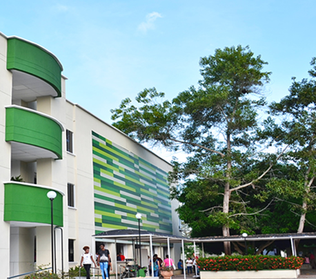
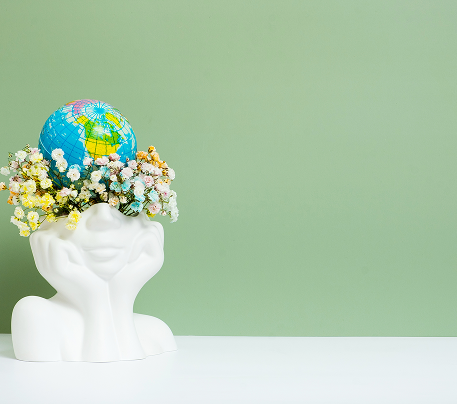

Plan de Curso
Mediaciones tecnológicas de las ciencias naturales
 1.png)

Identificación del curso
Horas de acompañamiento docente
36 horas
Horas de trabajo independiente
108 horas
Área de formación
Disciplinar
Justificación del curso

Objeto de estudio
Impacto de las mediaciones tecnológicas en la transformación del proceso de enseñanza del docente de ciencias naturales.
Propósitos de formación del curso
GENERAL
Comprender el impacto que generan las mediaciones tecnológicas en el proceso de enseñanza de las ciencias naturales.
ESPECÍFICOS
Profundizar sobre las concepciones de las mediaciones tecnológicas en la enseñanza de las ciencias naturales.
Competencias del curso

SABER
Capacidad para reconocer la importancia de las mediaciones tecnológicas.

SABER HACER
Conoce la importancia de incorporar las TIC en la práctica docente.

SABER SER
Capacidad para reconocer el valor didáctico que tienen las mediaciones tecnológicas.